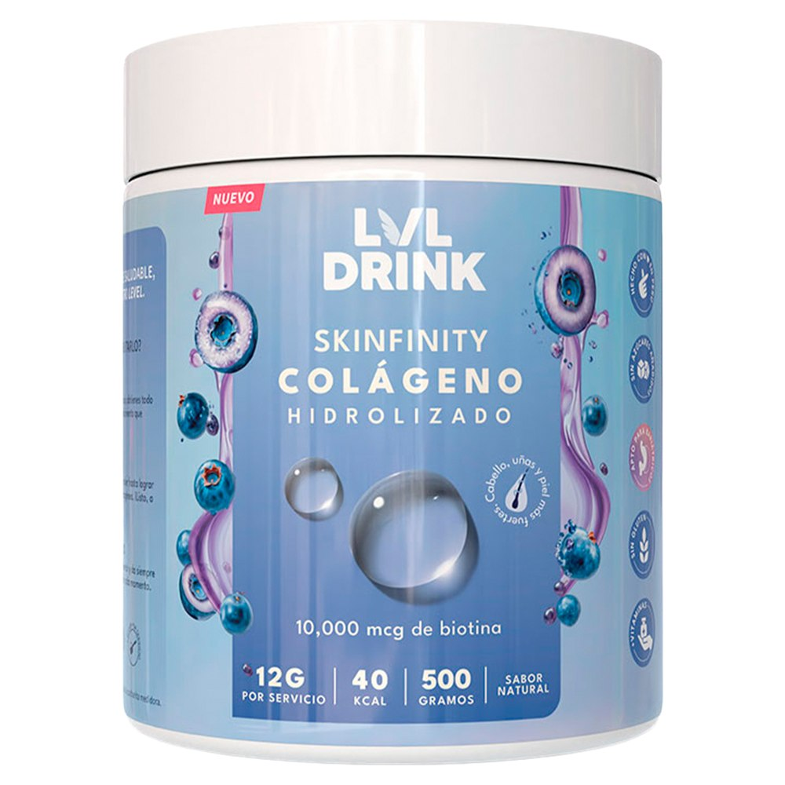
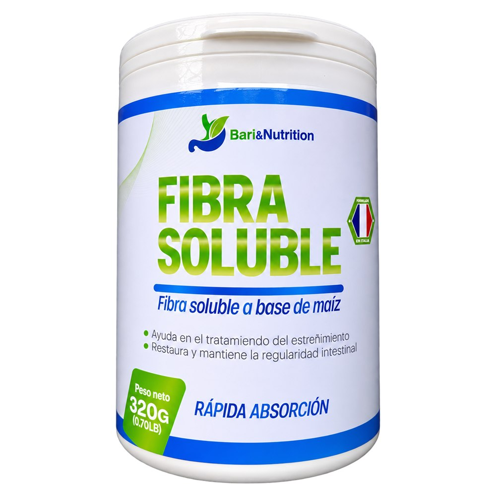
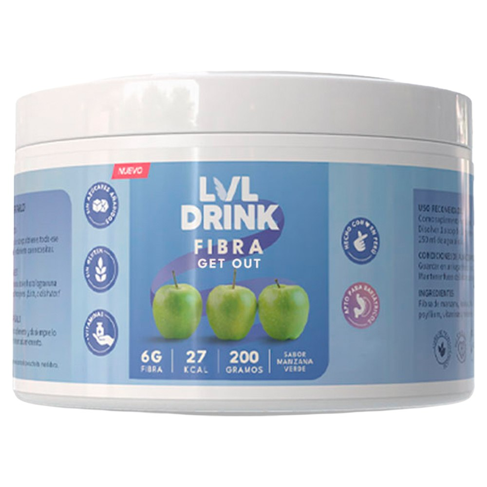

La pérdida de peso acelerada después de un bypass gástrico o una manga gástrica puede afectar tu piel, cabello y tránsito intestinal. El colágeno hidrolizado con biotina apoya la elasticidad de la piel y la salud del cabello, mientras que la fibra soluble ayuda a prevenir el estreñimiento, uno de los malestares más comunes del post-operatorio. Envíos a todo el Perú.

Colágeno hidrolizado con camu camu, arándano y 10,000 mcg de biotina. Para el cuidado de piel, cabello y uñas. Sabor natural arándano, sin azúcares añadidos.

Fibra soluble a base de maíz, de origen francés. Rápida absorción. Ayuda en el tratamiento del estreñimiento y mantiene la regularidad intestinal.

Fibra natural de inulina. Mejora la digestión, promueve la salud intestinal y favorece la sensación de saciedad. Sabor manzana verde, sin azúcares añadidos.
El colágeno y la fibra comparten categoría porque suelen aparecer en el mismo momento del proceso, pero atienden cuestiones que no tienen nada que ver entre sí. Conviene no confundirlos al momento de elegir.
Cuando la pérdida de peso es rápida, la piel es de las primeras cosas que lo acusa. El colágeno hidrolizado se asocia habitualmente al cuidado de la piel, el cabello y las uñas durante ese proceso, y suele acompañarse de biotina.
Suele incorporarse: en etapas más avanzadas, cuando la suplementación esencial ya está cubierta.El estreñimiento es una de las molestias más frecuentes del post operatorio, y tiene una explicación sencilla: al reducirse mucho el volumen de comida, también se reduce la fibra que llega. La fibra soluble aporta ese componente en muy poco volumen.
Suele incorporarse: a partir de blandos y sólidos, cuando el tránsito se vuelve más lento.Es la confusión que más se repite, y vale la pena aclararla porque tiene consecuencias reales en el post operatorio. El colágeno es una proteína, pero no aporta el perfil completo de aminoácidos que se busca con la proteína del post operatorio. Son suplementos con finalidades distintas y no se sustituyen entre sí.
Dicho simple: la proteína del post operatorio acompaña el cuidado de la masa muscular durante la pérdida de peso; el colágeno se orienta al tejido de la piel, el cabello y las articulaciones. Tomar colágeno no cubre el requerimiento de proteína, y por eso suele incorporarse además de ella, nunca en lugar de ella. Puedes ver las opciones de proteína para bariátricos en su propia sección.
Estas herramientas son gratuitas y te ayudan a llegar con las preguntas correctas a tu control.
Este contenido es educativo y no reemplaza la consulta con un profesional. Los suplementos no sustituyen una alimentación balanceada. Consumir únicamente bajo indicación de su médico o nutricionista.